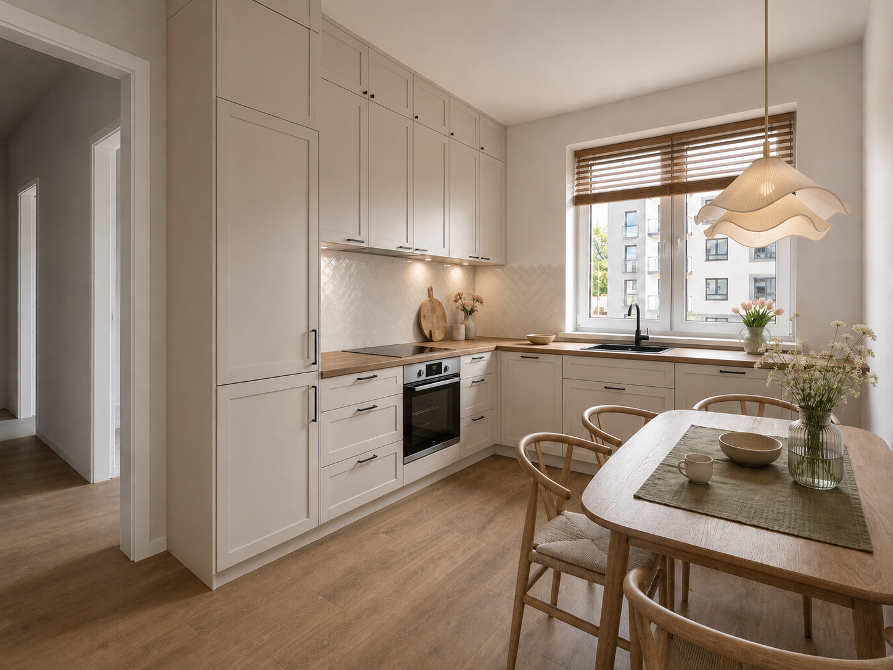
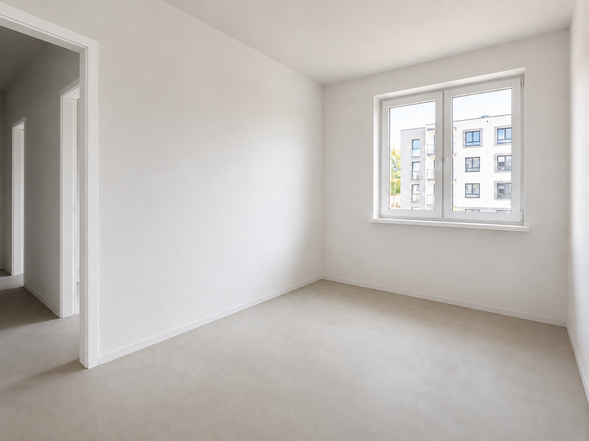
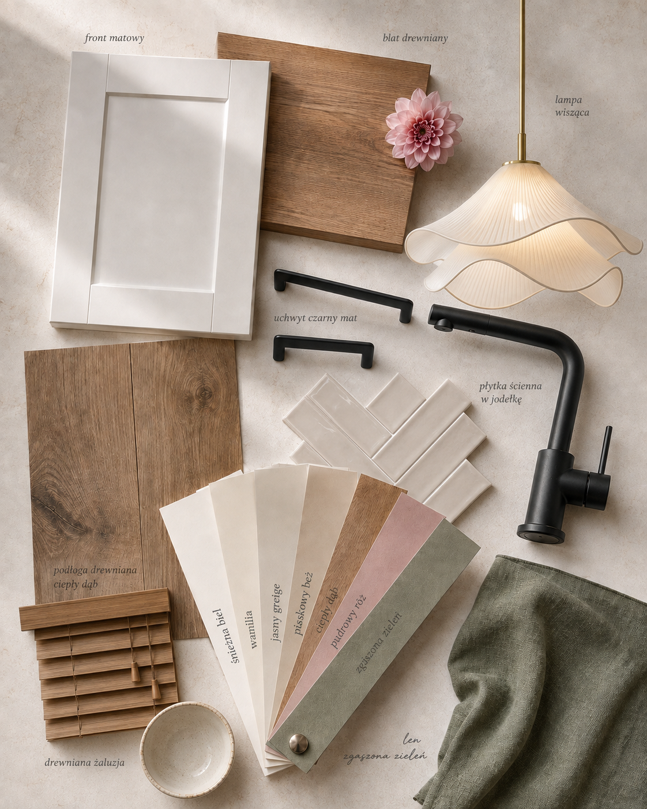

Zobacz swoją nową kuchnię zanim wydasz pieniądze na remont.
Wystarczy zdjęcie Twojej obecnej kuchni, moodboard i jeden gotowy prompt.


Taką wizualizację możesz stworzyć samodzielnie w ChatGPT. Pokażę Ci jak.
Zrób zdjęcie swojej kuchni
Stań w miejscu, z którego dobrze widać całe pomieszczenie. Najlepiej wykonaj zdjęcie przy naturalnym świetle, szerokim kadrem i bez trybu portretowego.
Zapisz moodboard
Moodboard pokazuje AI, jak ma wyglądać Twoja nowa kuchnia. To z niego ChatGPT odczyta kolor frontów, drewno, blat, płytki, uchwyty, armaturę i klimat wnętrza.

Kliknij, aby pobrać plik moodboardu na swoje urządzenie.
Otwórz ChatGPT i dodaj oba zdjęcia
Potrzebujesz darmowego konta ChatGPT. Jeśli go nie masz, założysz je w minutę na stronie, którą otworzy przycisk poniżej.
OTWÓRZ CHATGPT →W nowej rozmowie dodaj oba obrazy do jednej wiadomości. Nie wysyłaj jej jeszcze. Najpierw skopiuj prompt z kolejnego kroku.
Skopiuj gotowy prompt
Nie musisz opisywać każdego materiału ani zastanawiać się, co napisać AI. Przygotowałam prompt, który mówi ChatGPT, co może zmienić i czego nie powinien zmieniać.
Wygeneruj swoją kuchnię
Masz już otwarty ChatGPT ze zdjęciem kuchni, moodboardem i gotowym promptem. Wklej prompt pod załączonymi zdjęciami i wyślij wiadomość.
WRÓĆ DO CHATGPT →Pierwsza wersja nie jest idealna? Nie zaczynaj od początku. Poproś AI o zmianę tylko jednego elementu, np.:
„Zmień tylko kolor frontów na biały. Poza tym nic nie zmieniaj.”
LUB
„Zmień tylko płytki między blatem a szafkami na płytki z załącznika.”